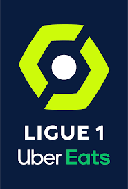
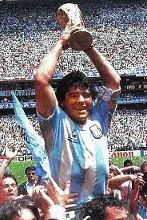

Ponuka
Tu si možete pozriet všetky online vysledky flashscore.
Najlepšie futbalové ligy na svete:
- tablulka
- Premier league
- Anglicko 517 16 576 402 €(priemerná cena od štatu za mesiac)
Anglická liga(Premier league)

- tablulka
- La Liga
- Španielsko 505 9 702 970 €(priemerná cena od štatu za mesiac)-za mesiac
Španielská liga(La Liga)
- tabulka
- Seria A
- Taliansko 554 9 277 978 €(priemerná cena od štatu za mesiac)
Talianská liga(Seria A )
- tabulka
- Bundesliga
- Nemecko 528 8 636 364 €(priemerná cena od štatu za mesiac)
Nemecká liga(Bundesliga )

- tablulka
- Ligue 1
- Francúzsko 553 6 564 195 €(priemerná cena od štatu za mesiac) 
Francuzská liga(Ligue 1 )
Štadiony
- cam nou
- Najväčším štadiónom v Európe je Camp Nou
- Bol postavený v roku 1957 v metropole Katalánska
- Do roku 2024 by sa kapacita štadióna mala rozšíriť na 105 000, čím si upevní prvú pozíciu v tabuľke najväčších európskych štadiónov
1. Camp Nou – Barcelona | 99 354 divákov


- wembley
- Druhý najväčší štadión Európy sa nachádza v metropole Anglicka
- Štadión Wembley slúži ako dejisko pre zápasy anglickej futbalovej reprezentácie či finále FA Cupu
- Postavený bol v roku 2007 na mieste bývalého štadióna s rovnakým názvom
2. Wembley Stadium – Londýn/ 90 000 divákov

- stade
- Národný štadión „Galského kohúta“ zažil najväčšiu slávu po otvorení v roku 1998, kedy sa Francúzom podarilo získať titul Majstrov sveta na domácej pôde
- Otvorený bol v roku 1998, nachádza sa v Saint-Denis, v severnom predmestí Paríža
- S kapacitou približne 81 338 sedadiel je s odstupom najväčší štadión vo Francúzsku
3. Stade de France – Paríž | 81 338 divákov
Legendy
- pele
- bol brazílsky profesionálny futbalista hrajúci na pozícii útočníka
- Mnohými bol považovaný za najlepšieho futbalistu všetkých čias
- Bol považovaný za perfektného záložníka i útočníka, výborného zakončovateľa a výnimočného v driblovaní i prihrávaní.
Pelé (vlastním menom Edson Arantes do Nascimento)
- pele
- bol argentínsky futbalista
- Mnohými je považovaný za jedného z najlepších a najtalentovanejších svetových hráčov všetkých čias
- S národným mužstvom Argentíny zvíťazil vo finále majstrovstiev sveta v roku 1986 v Mexiku a bol druhý na majstrovstvách sveta v roku 1990 v Taliansku 
Diego Armando Maradona
- Ronaldinho
- je bývalý brazílsky profesionálny futbalista a ambasádor španielskeho klubu FC Barcelona
- Najčastejšie hrával ako ofenzívny záložník, ale hrával taktiež na pozícii útočníka alebo krídelníka
- V Európe hrával za Paris Saint-Germain, FC Barcelonu a AC Miláno. Hral aj za Brazílsky národný tím.
Ronaldinho (Ronaldo de Assis Moreira)
Online hodiny
| Online hodiny | |
|---|---|
| Pondelok | 7:00-22:30 |
| Utorok | 7:00-22:30 |
| Streda | 7:00-22:30 |
| Štvrtok | 7:00-22:30 |
| Piatok | 7:00-22:30 |
| Sobota | 7:00-22:30 |
| Nedeľa | 7:00-22:30 |
Formular
Kontaktné údaje
Poprad,05801,
tel.č: 0944 467 649
email:alexliska@gmail.com
Sledujte nás na